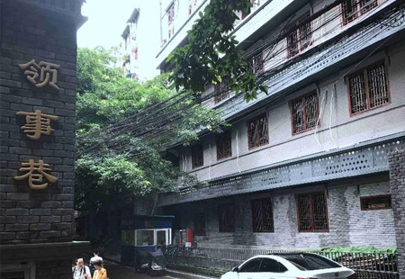

渝中区通远门城门内有条老巷子—领事巷，是渝中区主打的特色老社区。
领事巷如今已无领事
单听名字，领事巷一定会让外地人有很多想象。记者第一次陪朋友从这里进入山城步道，朋友惊问：“这里住的全是外国人吗？”
无独有偶，《重庆晚报》副刊上曾有个老重庆段子讲到：有位一知半解又喜欢冒皮皮（重庆话：吹牛）的导游，有游客问他重庆的领事馆，他说重庆现在有英国、日本、加拿大等国驻重庆领事馆。游客接着问，听说重庆有个领事巷？他回答：领事巷嘛，当然就是领事馆旁边的街巷了啊！
导游不知，现在的领事馆与老重庆城那个领事巷，不是一码事！如今的领事巷除了老巷入口处三个大字“领事巷”外，老巷内已没有多少和领事馆、领事有关的人和物。
记者带着好奇从通远门走进领事巷，逼仄的老巷长数百米，宽约8米。巷子东接金汤街、南连山城巷，越往里越逼仄，仅为1至2米宽的石板路小巷连接山城巷。
和重庆很多老巷一样，领事巷内的黄葛树有些年头，发达的根系牢牢地抱住民居下的石堡坎，要是天气晴朗，阳光从冠盖如伞的绿荫缝隙里射进老巷，树影斑驳，又是一番风味。
“领事巷很早就有人居住，但是人很少，一直没人气。”重庆地名文化研究专家李正权介绍，领事巷是典型的背街小巷，一是紧邻城墙，沟沟坎坎，地理位置不佳；另外，当时人们去南纪门码头都喜欢从天官府、放牛巷下去。
但是领事巷毕竟在城内，地价便宜，所以这大户人家特别喜欢在这里建“别墅”。李正权说，此地靠近金汤门，清代中叶形成街巷，清末命名为金家巷，因有金姓大户人家的住宅而得名，位置大约在现领事巷南段。20世纪30年代并入领事巷，原地名消失。
英法美等领事馆曾设于此
领事巷
领事巷起源于重庆开埠，确实与英、德、美等国在此建立领事馆有关。
李正权介绍，1890年，中英签订《烟台条约续增专条》，重庆开为商埠。当年，英国就在重庆城内开设了领事馆。到清光绪二十六年，即1900年，随着英国对四川、重庆的贸易不断扩大，领事馆办事人员不断增加，原来位于城里闹市的领事馆已经不能满足需要，清政府就把金汤门城墙里的上半段划给各国作领事馆用，下半段划给法国天主教会，于是原来略显荒凉的金汤门就开始热闹起来。
青砖装饰的老重庆地图
如今，经过改造的领事巷特色老社区古色古香的青砖上图文并茂地向过往的游客介绍这段历史：1896年3月，法国设领事馆于巷内；继而12月，美国设领事馆于紧邻的五福宫前；1900年，英国领事馆迁来巷内；1904年，德国领事馆驻节桂香阁侧；如是，原本僻静狭窄的街巷，因外国使节机构的入住，而名领事巷。抗战时期，随着国民政府迁渝，相关国家的大使馆随迁重庆，最开始也在领事巷与领事馆合署办公。
巷口连接金汤街的“吊脚楼”
“当时领事巷住的都是有身份的领事官员，而一般经商的外国人只能住在城外南岸。”李正权介绍，由于大使馆越来越多，城内太拥挤，很多开始在李子坝、国际村以及南岸等地设立大使馆，领事巷才开始衰落。

老巷里的黄葛树
德国领事馆旧址保存完好
据领事巷特色老社区新建的文化浮雕介绍，1938年4月，英国大使馆迁渝合署办公，1938年5月4日，遭日机轰炸后，大使馆迁南岸文峰乡，领事馆不变。其后，馆址和人员屡次被炸。同样，法国领事馆在领事巷也经历了与法国大使馆合署办公又分开的过程，1939至1941年期间，法国领事馆馆舍也屡遭日机轰炸，严重损毁。
特色文化浮雕
值得一提的是，与今天的领事巷社区一墙之隔的渝中区和平路原区政府内，还保留着德国领事馆旧址。
德国领事馆旧址为一楼一底，每层7开间，正立面外廊，第一层外廊为连卷式，第二层外廊为简洁玻璃门窗。据渝中区文管所资料显示，该建筑为重庆市优秀历史建筑和渝中区文物点。
据现场重庆市优秀历史建筑铭牌显示，该建筑建于20世纪20年代，为开埠建市风貌建筑。记者采访时发现，洁白外墙的德国领事馆旧址保存完好，目前还有单位正在使用中。
越往里巷子越窄
此外，在今天领事巷内还保存着一楼老建筑，这栋别致的二层小楼也为中西合璧式砖木结构建筑，和德国领事馆旧址建筑造型很像。据渝中区文管所资料显示，该建筑最先为当时重庆“金融巨子”康心之的公馆，康心之的兄弟是著名的康心如，美丰银行的掌舵者，康心如掌舵几十年的美丰银行旧址今天还矗立在新华路。
如今的领事巷周边还有很多曾经的“豪宅”，记者曾经进行过探访。比如，与领事巷百米之遥的唐式遵公馆旧址，还有藏身于妇幼保健院内的王缵绪公馆旧址，以及天官府的郭沫若旧居。
这些历经沧桑的老建筑为这条百年老巷增添了更多的故事与神秘色彩。